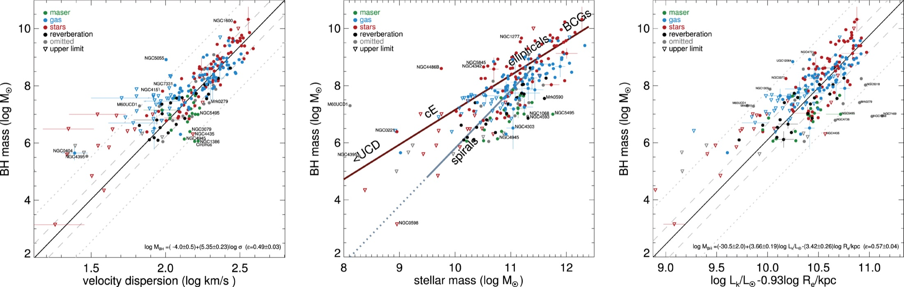

Black Holes & Their Host Galaxies
We measure central black‑hole masses across the full mass spectrum — from intermediate‑mass systems to ultramassive black holes — combining high‑resolution stellar and molecular‑gas kinematics to constrain formation channels and co‑evolutionary pathways over cosmic time.
The State of the Field
Two decades of scaling relations, an expanding toolkit of dynamical methods, and a set of stubbornly open questions.
The modern picture began when dynamical surveys of nearby galaxies revealed that black-hole mass correlates tightly with properties of the surrounding stellar bulge. Magorrian et al. (1998) established the link to bulge mass, and within two years the remarkably tight relation with stellar velocity dispersion; the $M_{\rm BH}-\sigma$ relation was reported independently by Ferrarese & Merritt (2000) and Gebhardt et al. (2000).
The small scatter of these relations — and of related combinations of host luminosity and effective radius that behave like a black-hole fundamental plane — implies that black holes and their hosts are not independent, but grow in concert. Reviews by Gültekin et al. (2009) and Kormendy & Ho (2013) consolidated the census and refined the slopes, while raising a question that still drives the field: what physical mechanism keeps a black hole and a galaxy — separated by more than nine orders of magnitude in scale — so closely coupled?

Progress hinges on how the masses are measured. Stellar-dynamical modelling (Schwarzschild orbit superposition and Jeans anisotropic models) and ionised-gas kinematics were the early workhorses, complemented by the exquisite geometry of nuclear water megamasers where they exist.
More recently, ALMA has opened cold molecular gas as a clean dynamical tracer, resolving regular circumnuclear disks whose rotation pins down the enclosed mass (e.g. Davis et al. 2013; Nguyen et al. 2021). JWST/NIRSpec now pushes spatially resolved stellar kinematics to fainter, more distant nuclei. My own work sits within this multi-tracer effort, cross-calibrating methods on the same targets to expose systematic differences.
Yet major questions remain unresolved. At the low-mass end, the seeds of today's black holes are unknown: did they form as light remnants of the first stars or as heavy direct-collapse objects (Volonteri 2010)? The occupation fraction of intermediate-mass black holes in dwarf galaxies — a direct discriminator between these channels — is still poorly constrained (Greene, Strader & Ho 2020; Reines & Volonteri 2015).
At the high-mass end, there are hints that the scaling relations bend or broaden for the most massive ellipticals, and the role of AGN feedback in maintaining the coupling is debated. Underlying all of this, resolution and selection biases can distort the inferred relations, motivating the careful, homogeneous measurements this program is built around.

Black Hole Formation and Growth
Where do the seeds of today's massive black holes come from, and how do they grow into the giants we observe? I use precise dynamical masses of nearby black holes as fossil records of their formation and growth history.
Details
Overview
Essentially every massive galaxy hosts a central black hole, yet the origin of these objects remains one of the central open problems in astrophysics. Three families of seeding channels are usually considered: light seeds of order 102 M⊙ left behind by the first generation of metal-free stars, heavy seeds of 104–105 M⊙ produced by the direct collapse of pristine gas clouds, and intermediate seeds built by runaway stellar and stellar-remnant mergers in the dense cores of young clusters. Each scenario predicts a distinct black hole occupation fraction and mass distribution in low-mass galaxies today, and each is subsequently reshaped by gas accretion and by galaxy–galaxy mergers. The existence of billion-solar-mass quasars already at z > 6 demands extremely rapid early growth, while the black holes in nearby dwarf galaxies and star clusters are the least-evolved relics available and therefore retain the clearest memory of the seeds themselves.
My Research
My work attacks this problem from the observational side by building homogeneous, dynamically measured black hole masses across the whole accessible mass range. Using JWST/NIRSpec and NIRCam data, ALMA molecular-gas observations, and end-to-end simulations of ELT instruments, I measure masses in systems from dwarf galaxies and nuclear star clusters up to giant ellipticals, so that the low-mass end of the local mass function — the regime that discriminates most strongly between seeding channels — can be populated with reliable measurements rather than upper limits.

Massive Black Holes Across the Mass Spectrum
Measuring black hole masses continuously from the intermediate-mass regime in dwarf galaxies and star clusters up to the supermassive black holes of giant ellipticals, with a single, consistent dynamical approach.
Details
Overview
Known massive black holes span roughly eight decades in mass, but the census is far from uniform. The interval between about 102 and 105 M⊙ — the intermediate-mass black holes — remains almost empty, not necessarily because such objects are rare but because their gravitational sphere of influence subtends only a few tens of milliarcseconds even in the nearest dwarf galaxies, nuclear star clusters and globular clusters. At the opposite extreme, the most massive black holes in brightest cluster galaxies probe the limits of accretion and merger-driven growth. Because different mass ranges are traditionally studied with different techniques — stellar dynamics, cold-gas dynamics, reverberation mapping, single-epoch AGN scaling — systematic offsets between methods can easily masquerade as physical structure in the mass function. Applying one carefully controlled dynamical framework across the full spectrum is therefore essential.
My Research
I am developing a Python pipeline that separates the AGN continuum from the underlying stellar light in JWST/NIRSpec and NIRCam data, which is the key step for extracting uncontaminated stellar kinematics in active nuclei, and I lead supermassive black hole mass measurements in NGC 4258 and M87. In parallel I model ALMA datacubes with KinMS to determine black hole masses in NGC 7052, NGC 4061, NGC 2513 and Circinus. On the intermediate-mass side, I simulate mock HARMONI integral-field datacubes and MICADO imaging of dwarf galaxies, nuclear star clusters and globular clusters, recover the input masses through dynamical modelling, and map out where the ELT will and will not be able to detect intermediate-mass black holes within about 20 Mpc.

Black Hole and Galaxy Coevolution
Black holes and their host galaxies appear to grow together. I test how tightly that coupling holds across morphology, mass and environment using dynamical masses paired with detailed host measurements.
Details
Overview
The energy released by an accreting black hole is far larger than the binding energy of its host galaxy, which makes it plausible that black holes regulate the star formation and gas content of the systems in which they live. This idea underpins the feedback prescriptions of essentially all modern cosmological simulations, and it is invoked to explain the quenching of massive galaxies and the shape of the galaxy stellar mass function. The observational picture, however, is still ambiguous: correlations between black hole mass and host properties could reflect genuine causal coupling, or they could emerge statistically from repeated mergers averaging over initially uncorrelated distributions. Distinguishing these possibilities requires accurate black hole masses in galaxies of many different types, together with equally careful measurements of the stellar structure, kinematics and stellar populations of the hosts.
My Research
For every galaxy in my samples I combine the dynamical black hole mass with a full structural and kinematic description of the host: multi-Gaussian expansion models of the surface photometry, stellar population and kinematic measurements from integral-field spectroscopy, and molecular-gas distributions from ALMA. This lets me look for systematic differences between quiescent ellipticals, gas-rich spirals and dwarfs. I am also quantifying, through simulated HARMONI observations, how far beyond 100 Mpc dynamical mass measurements can be pushed, since reaching those distances begins to probe the era when black hole and galaxy growth were most vigorous.

Stellar and Gas Kinematics and Galaxy Dynamics
Kinematics is the most direct probe of mass. I model stellar and cold-gas motions in galactic nuclei to weigh central black holes and to characterise the dynamical structure of their hosts.
Details
Overview
A dynamical mass measurement rests on resolving the region where the black hole dominates the gravitational potential and on modelling the motions of tracers within it. Stellar kinematics extracted from integral-field spectroscopy can be combined with photometric mass models through Jeans anisotropic or Schwarzschild orbit-superposition methods, and are available in essentially every galaxy, at the cost of degeneracies with the mass-to-light ratio, orbital anisotropy and dark matter. Cold molecular and atomic gas offers an attractive alternative, since gas discs in relaxed nuclei follow nearly circular, close to Keplerian orbits and are observable at very high angular resolution, but the interpretation must account for inclination, turbulence, non-circular motions and inflow. Using both tracers on the same galaxies is the most reliable route to controlling these systematic effects.
My Research
My analysis toolkit combines MGEfit for surface photometry, pPXF for stellar kinematics, JAM for dynamical models and KinMS for gas-disc modelling, applied to ALMA datacubes, JWST/NIRSpec integral-field data, VLT/MUSE and Keck/OSIRIS spectroscopy, and HST and JWST/NIRCam imaging. My master's thesis measured the supermassive black hole mass of NGC 7052 from high spatial resolution molecular gas observed with ALMA, and I am extending the same approach to a larger sample so that stellar and gas-based masses can be compared galaxy by galaxy.

Computational Astrophysics, Simulations, and Modelling
Building simulation and modelling tools that predict what future instruments can actually measure, and turning raw datacubes into physical parameters through forward modelling.
Details
Overview
Extracting a black hole mass from observations is fundamentally a forward-modelling problem: a physical model is convolved with the instrument response and the atmosphere, compared with the data, and explored statistically. End-to-end instrument simulators make it possible to ask, before any telescope time is awarded, whether a given target can be measured at all, what exposure time and spectral setup are required, and how the recovered parameters are biased by point-spread function structure, spectral resolution and signal-to-noise. The same machinery is needed after the fact to propagate realistic uncertainties. This makes reproducible, well-tested code an integral part of the science rather than a side activity.
My Research
I work in Python with numpy, astropy, matplotlib and pandas, and in Matlab, and I develop pipelines that decompose AGN and stellar light in JWST data, generate mock HARMONI integral-field datacubes with HSIM and MICADO images with SimCADO, and fit kinematic models with KinMS. With these tools I design observing strategies for detecting the kinematic signatures of intermediate-mass black holes within about 20 Mpc, assess the limitations of HARMONI for that science case, and forecast dynamical mass measurements of supermassive black holes in quiescent ellipticals beyond 100 Mpc.
Instrumentation and Facilities
Ground- and space-based facilities spanning millimetre to optical wavelengths provide the multi-wavelength coverage required to model both the stellar and the gaseous tracers of central black hole masses.


Accepted Observing Time
Competitively awarded programmes on world-class facilities that underpin our black hole mass measurement campaign.